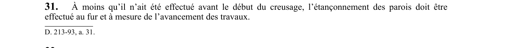

art-31-RSSM : étançonnement progressif avancement travaux
Un article du wiki ⚖️ Recueil législatif
En bref
À moins que l'étançonnement n'ait été effectué avant le début du creusage, il doit être réalisé au fur et à mesure de l'avancement des travaux. Cette obligation vise l'employeur.
- Sauf si effectué avant le début du creusage.
🌐 LegisQuébec · 📄 PDF officiel
Texte officiel : capture du PDF

Toucher l'image pour l'agrandir🔗 Voir art. 31 RSSM dans le PDF (page 20)
Version : texte officiel du RSSM (RLRQ c. S-2.1, r. 14), à jour au 1er mai 2024 — Éditeur officiel du Québec
Voir aussi
- art. 29 : étançonnement excavations tranchées surface · obligation : les parois d'une excavation ou d'une tranchée creusée en surface pour la découverte ou la préparation d'une mine doivent être étançonnées conformément aux plans et devis d'un ingénieur, lesquels doivent être conservés sur le site et être disponibles en tout temps.
- art. 30 : exemptions étançonnement parois · l'étançonnement n'est pas nécessaire pour une excavation ou tranchée dans le roc solide ou sans travailleur, pour des parois sans danger de glissement dont la pente est inférieure à 45° à moins de 1,2 m du fond, ou lorsqu'un ingénieur atteste que la pente, la nature du sol.
- art. 32 : inspection entretien parois chantier · obligation : au cours des travaux, les parois doivent être inspectées et entretenues de façon à ce qu'il n'y ait jamais de pierre ou matériaux susceptibles de se détacher ni de masse surplombante.
- art. 33 : distances dépôt circulation bord tranchée · interdiction : lorsque la profondeur d'une tranchée ou d'une excavation dépasse 1,2 m, il est interdit de déposer des matériaux à moins de 1,2 m du sommet des parois et de circuler ou stationner des véhicules ou machines à moins de 3 m du sommet.
- ⚖️ Loi habilitante : LSST
- ↑ Index du bloc : Aménagement du chantier
Pages qui pointent ici (5)
- art-29-RSSM : étançonnement excavations tranchées surface Recueil législatif
- art-30-RSSM : exemptions étançonnement parois Recueil législatif
- art-32-RSSM : inspection entretien parois chantier Recueil législatif
- art-33-RSSM : distances dépôt circulation bord tranchée Recueil législatif
- RSSM : Aménagement du chantier (art. 12 à 99) Recueil législatif